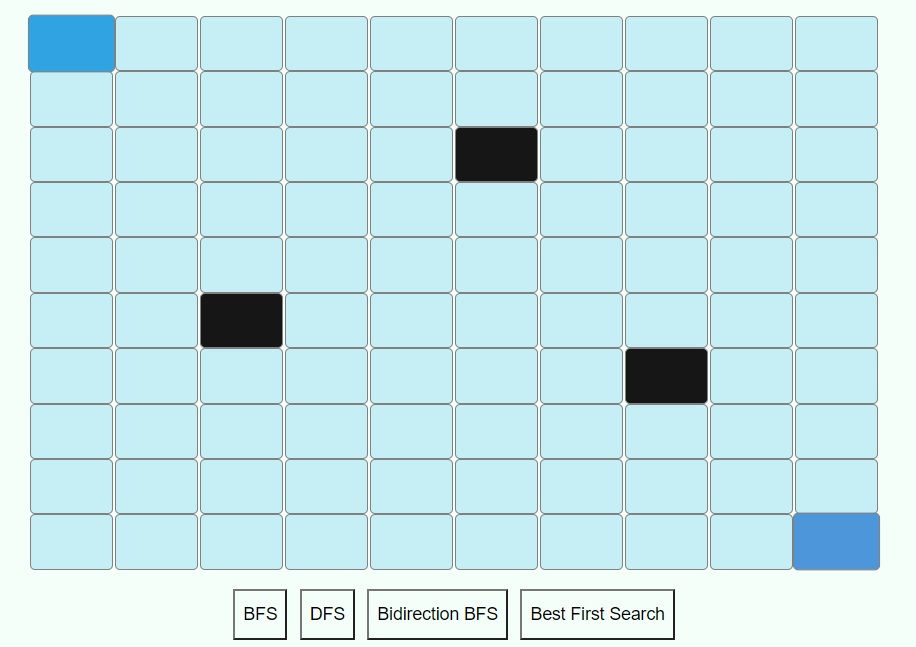

This game will give you the path from starting node to ending node.
You can create walls by clicking on the nodes.
Now click on one of the algorithms given below and it will generate the path from staring to ending node.
Graph traversal means visiting every vertex and edge exactly once in a well-defined order. While using certain graph algorithms, you must ensure that each vertex of the graph is visited exactly once. The order in which the vertices are visited are important and may depend upon the algorithm.
BFS is a graph search algorithm which find smallest path form source to goal vertex, where you should start traversing from a selected node (source or starting node) and traverse the graph layerwise thus exploring the neighbour nodes (nodes which are directly connected to source node). You must then move towards the next-level neighbour nodes. Breadth First Search Algorithm finds smallest path.
The DFS algorithm is a recursive algorithm that uses the idea of backtracking. It involves exhaustive searches of all the nodes by going ahead, if possible, else by backtracking. It does not guarantee shortest path.
Bidirectional search is a graph search algorithm which find smallest path form source to goal vertex. It runs two simultaneous search –
1.Forward search form source/initial vertex toward goal vertex
2.Backward search form goal/target vertex toward source vertex
Bidirectional search replaces single search graph(which is likely to grow exponentially) with two smaller sub graphs –
one starting from initial vertex and other starting from goal vertex. The search terminates when two graphs intersect.
In BFS and DFS, when we are at a node, we can consider any of the adjacent as next node. So both BFS and DFS blindly explore paths without considering any cost function. The idea of Best First Search is to use an evaluation function to decide which adjacent is most promising and then explore. Best First Search falls under the category of Heuristic Search or Informed Search. It does not guarantee shortest path.